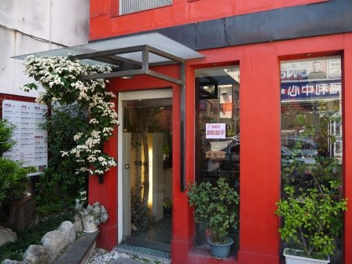

丼飯店的外觀相當的吸引人阿 大紅色的建築物 整體的設計相當的西式 雖然都是紅的但是相當的協調不突兀
這裡有賣讓人吃了會幸福的味道 丼飯咖哩跟鍋燒
在這一叢花的後面 有菜單阿 進門前可以看清楚有沒有自己喜歡的菜色 沒有的話就閃
一進門生意還真的不錯啊 天花板也是黑色的 不過吊掛了不少的紅色燈籠 相當具有日本的風
果真是賣的日式食物阿 菜單上還有櫻花阿 不過這裡真的是走平價路線的 套餐160起就可以吃到了
這是湯跟飯 需要自助取用 而且可以無限量的續阿 所以吃不飽可以一直吃飯喝湯
這是味增湯 湯頭跟加進的海帶蔥是分開的 不過味當相當台式也不會太鹹 真的可以一碗接著一晚
套餐來了 有一點牛蒡絲一小碗的茶碗蒸跟一小碗的飯後甜點布丁
親子丼上來了阿 親子丼就是雞肉加上半熟的蛋液阿 這裡的半熟蛋液處理的還OK 跟那天吃的大戶屋比起來 這裡感覺更像日式的親子丼
我相信有很多人對於這種沒有熟的雞蛋是畏懼三分阿 其實我也是 因為沒有熟的蛋特別蛋白的部分 會讓人感覺有點腥 甚至吃起來會有點噁心 不過這裡處理的還OK可能蛋算是新鮮吧 不過如果是前一陣子H7N9還在流行的時候 我可能也不敢吃 整個親子丼除了蛋之外當然雞肉也是重點阿 雞肉的軟嫩也讓人更喜歡 雖然東西還不賴 但是跟我在日本吃的幾個親子丼 還有一點點的差距
這是豬排丼 就是把親子丼裡面的雞肉換成一大塊炸豬排阿
看看這炸豬排的切片阿 是白白軟嫩的樣子而且也很厚 這豬排吃起來不太軟不太硬 口感還算是OK
這個炸豆腐我覺得一點都不怎麼樣 裹了太多的粉了 所以吃起來有點像是勾芡的口感 因為直接把炸豆腐泡在醬汁中 炸的部分反而變得鬆軟了 所以這一份我覺得是失敗阿
整體而言 這餐廳滿足了我對日式料理的想念 當然還有空間可以進步的
引自:http://teavanilla.com/3009.html